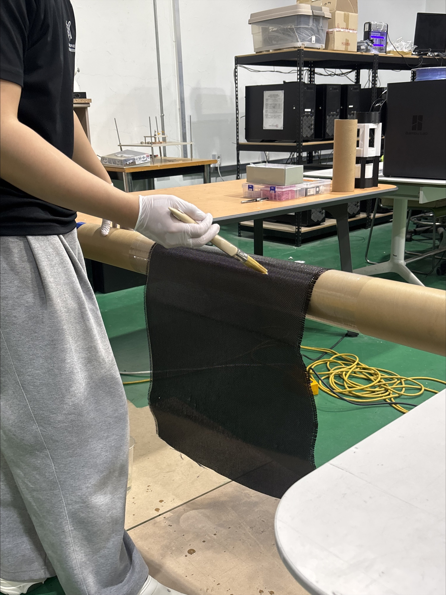
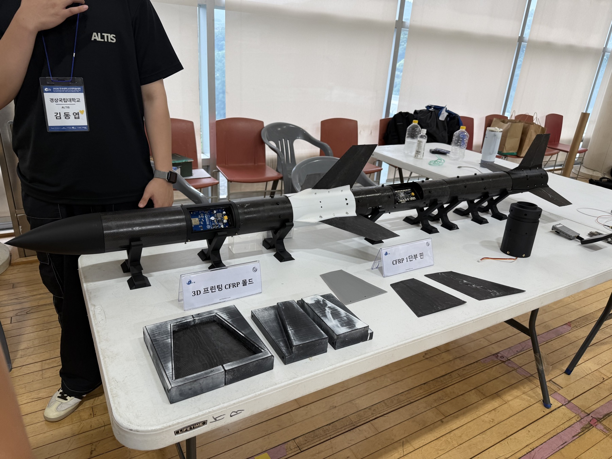
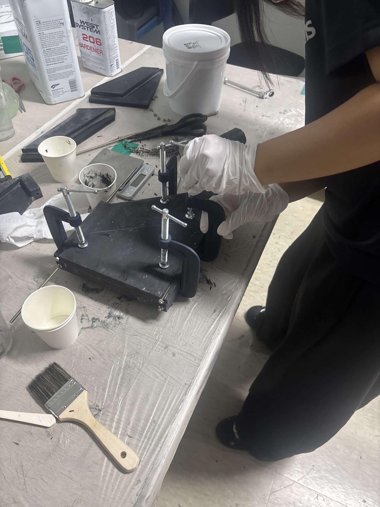
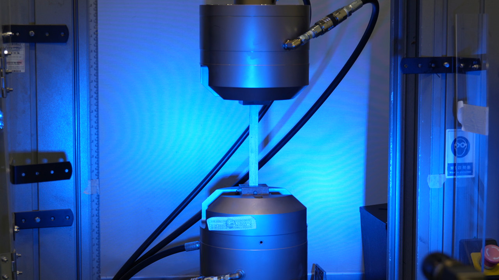
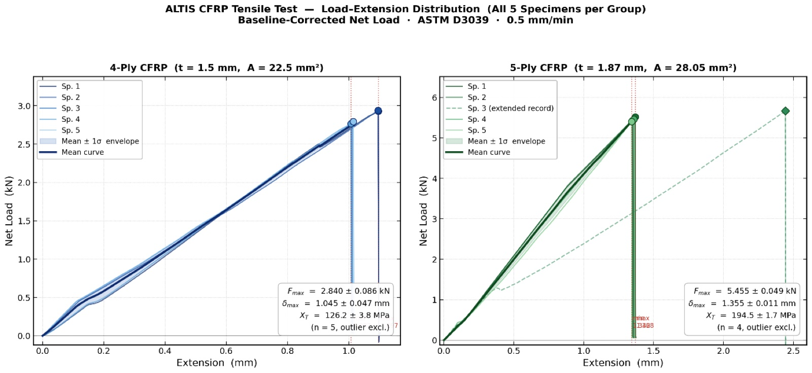
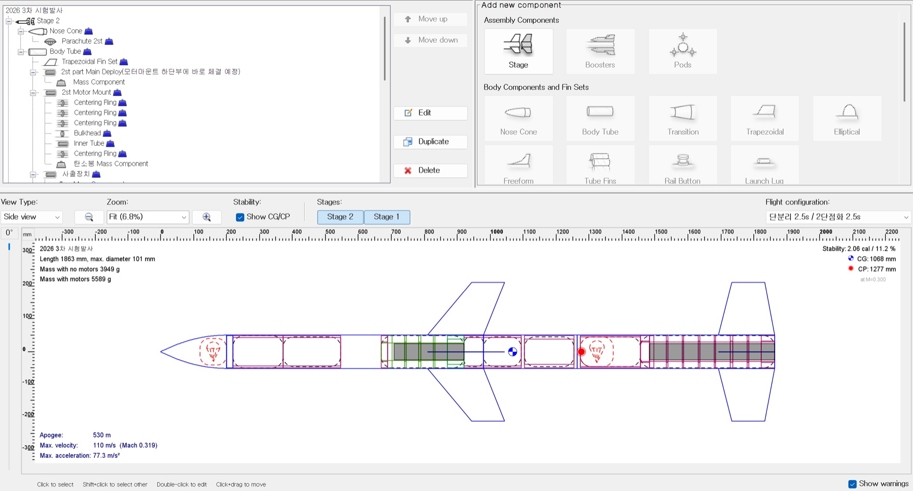

01 / CFRP BODY TUBE
복합재 동체 제작
Hand wet lay-up, 전 공정 자체 수행
3D 프린팅 기반 저비용 몰드 설계와 제작, 이형제 처리, 섬유 적층, 수지 함침까지 팀 내에서 직접 수행합니다. 다양한 치수의 CFRP 동체관과 복잡한 형상의 CFRP 핀을 자체 제작하며, 2027년부터는 VARTM 공정을 도입해 함침 균일도와 경량화를 발전시킬 계획입니다.

ALTIS / AERODYNAMICS & STRUCTURE
구조 파트는 ALTIS 로켓의 몸체를 책임집니다. 발사부터 회수까지 공력 하중과 관성 하중을 견디면서도 가볍고 신뢰성 높은 기체를 직접 설계하고 제작합니다.
기체 설계와 재료 선정부터 복합재 성형, 구조 해석, 물성 시험, 시험발사 피드백까지 하나의 반복 설계 과정으로 연결합니다.

Hand wet lay-up, 전 공정 자체 수행
3D 프린팅 기반 저비용 몰드 설계와 제작, 이형제 처리, 섬유 적층, 수지 함침까지 팀 내에서 직접 수행합니다. 다양한 치수의 CFRP 동체관과 복잡한 형상의 CFRP 핀을 자체 제작하며, 2027년부터는 VARTM 공정을 도입해 함침 균일도와 경량화를 발전시킬 계획입니다.

핀부터 성형 몰드와 지그까지 직접
로켓의 자세 안정성을 좌우하는 핀과 하단 동체의 결합 구조를 압축 성형 몰드 방식으로 제작합니다. 분절형과 일체형 구조의 하중 전달 특성을 비교하고, CFRP 핀과 핀 지그까지 직접 제작해 형상과 정렬의 재현성을 확보합니다.
ANSYS Fluent 외부 공력 해석 결과를 Static Structural로 연계하는 One-way FSI 해석을 수행합니다. 안전계수와 극한하중 기준을 적용해 실제 비행 하중에서 구조 건전성을 정량적으로 검증합니다.

자체 제작한 CFRP 시편의 인장·압축·전단 시험으로 실제 적층 물성치를 확보합니다. ASTM D3039, D3410, D3518 규격의 시험 결과를 ANSYS ACP 복합재 파손 해석에 반영합니다.

교내 복합재 구조 연구실 및 외부 시험기관과 협력해 신뢰도 높은 재료 데이터베이스를 구축하고, Tsai-Wu와 Puck 파손 기준을 활용한 해석 정밀도를 높입니다.

에비오닉스 기록과 영상 분석을 바탕으로 구조적 결함과 개선점을 찾습니다. 단분리 신뢰성, 낙하산 전개, 기체 자세 안정성을 다음 기체 설계에 즉시 반영하는 반복 검증 사이클을 운영합니다.